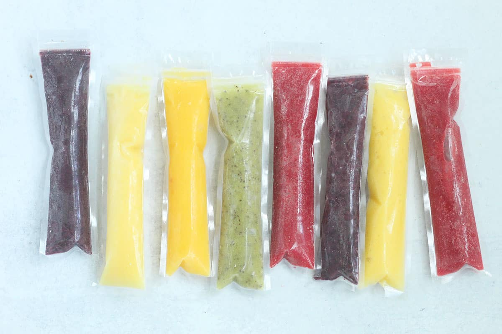

Fruity Pops

Description
Your kid like ice pops? Of course they do! Do they like fruit? They will now! time to blend those boring fruits into something fun and exciting. Let's look at how to make a fun, healthy snack in just a few steps.
Ingredients
- Choice of Fruit
- Apple Juice
- (Optional) Honey
- (Optional) Coconut Milk
Steps
- Cut up or peel and clean fruit of your choice.
- Toss in blender and add a little bit of apple juice and any optional sweetener.
- Blend until smooth and pour into ice pop sleeves.
- Freeze for at least 4 hours and enjoy!